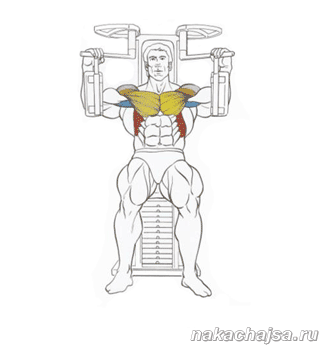

Помощь
Упражнения
Сведение рук в тренажере:
С помощью этого упражнения вы качаете внутренний край и среднюю часть большой грудной мышцы. По сути этот тренажер повторяет имитацию упражнения с гантели разводки, только риск получить травму меньше и выполнять его удобней.
Техника выполнения упражнения:
Сядьте в тренажер (бабочка), спиной упритесь в спинку (спину держите ровно) тренажера, возьмитесь руками за рукоятки, ноги поставьте шире плеч. Вдохните и сводите руки в локтях, в конечной точки сделайте выдох (когда будет самый тяжелый участок).